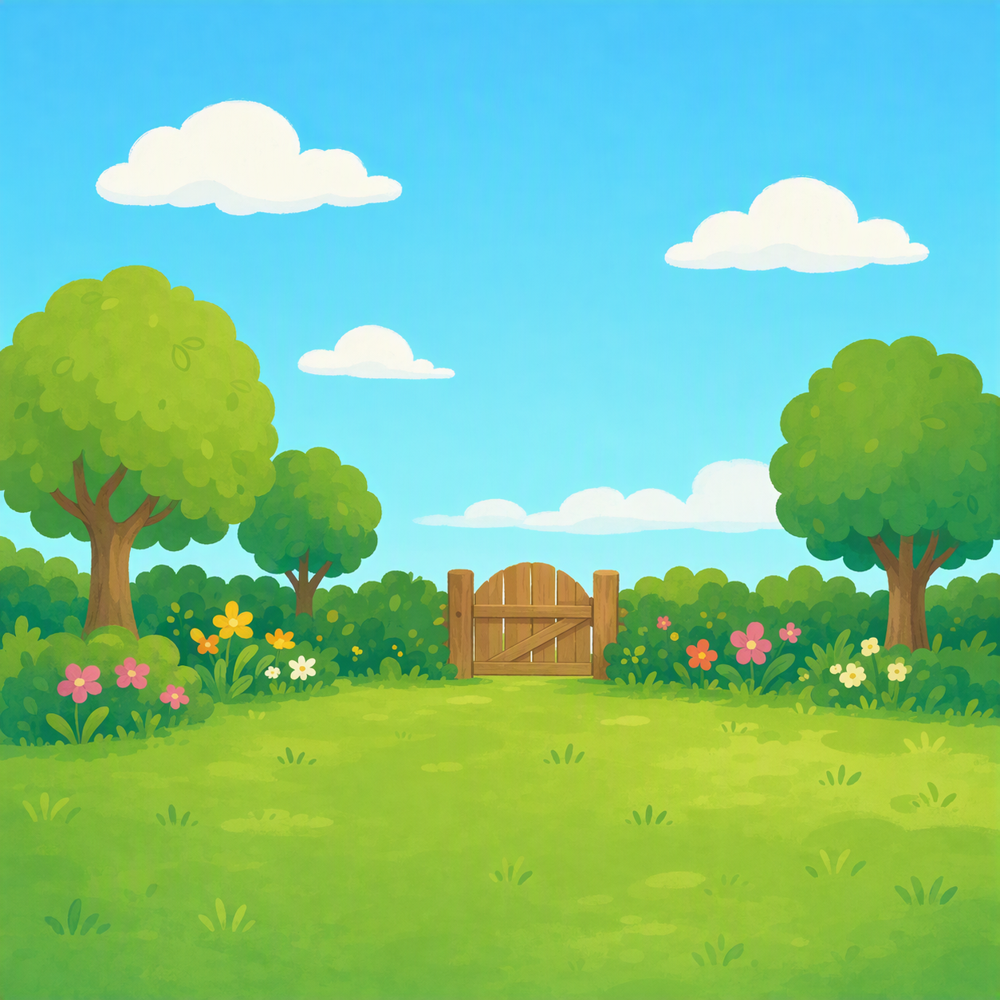

Pewnie już domyśliłaś się, dlaczego to zrobiłem. Zakładam również, że masz już dosyć mojego głosu po tych wszystkich „głosówkach”, dlatego tutaj masz wersję pisaną...
Tak w sumie planowałem zrobić projekt, który miałby ucieszyć wiele osób. Tylko że to było jeszcze przed tym, jak zacząłem się z Tobą przyjaźnić. W pewnym momencie pomyślałem sobie: „Po co robić projekt dla wielu osób, skoro mam obok siebie osobę wartą wiele?”
I właśnie wtedy cały pomysł trochę się zmienił.
Zamiast robić coś, co spodoba się wielu osobom, chciałem zrobić coś, co będzie miało znaczenie przede wszystkim dla jednej. Dla Ciebie.
Dlatego powstał ten cały ogród. Kwiaty, lekcje, motyle, wszystkie te małe rzeczy, które pewnie momentami wydawały Ci się kompletnie losowe. Każda z nich miała jednak swoje miejsce.
Chciałem stworzyć coś, przez co choć na chwilę zatrzymasz się i pomyślisz o sobie trochę inaczej. Nie przez to, co ktoś Ci powiedział, nie przez to, jak ktoś Cię ocenił, tylko przez to, kim naprawdę jesteś.
I jeśli chociaż jedna rzecz z tych wszystkich lekcji została Ci w głowie, jeśli chociaż jeden kwiat sprawił, że się uśmiechnęłaś albo spojrzałaś na siebie odrobinę inaczej, to dla mnie ten cały projekt już miał sens.
Bo koniec końców nie chodziło mi o stworzenie czegoś wielkiego.
Chodziło mi o stworzenie czegoś dla Ciebie. Bo Ty też zasługujesz na miłość, nawet jeśli czasami sama tego nie widzisz.